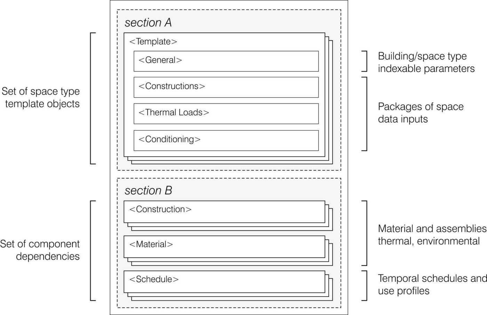
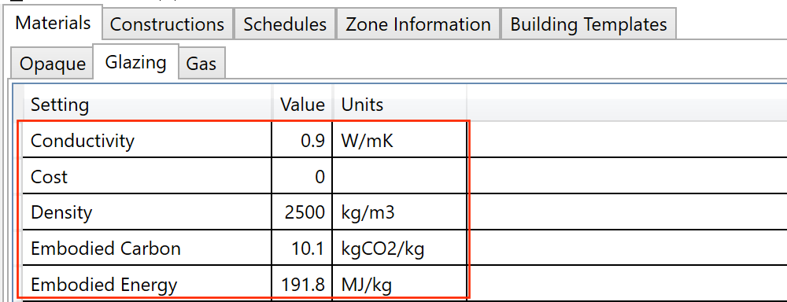

Building Archetypes¶
The Template Library File (TLF) is an XML type file with a specific structure in which all building and space properties, both thermal and environmental, are stored for multiple building types. It includes both a library of building definitions, and libraries of all their data dependencies.
Within the file, these categories are listed as XML objects, grouped by the previously named types, and can be created and edited both through the use of the template editor, and directly in any text edition software (See Figure below for a diagram of the data structure). To know more about the TLF file format and its importance in building performance simulation in design you can access the academic paper “Towards standardized building properties template files for early design energy model generation”, accessible in the following link.

Basic content modification¶
Each component data type in a library file has different data fields accessible within the Template Editor, used in different modules of umi. This section provides general directions about how to manipulate these fields. However, in order to know more about the specific meaning and interpretation of the fields, you can visit the “Embodied Energy” and “Operational Energy” sections of this user guide.

You can add a new component to the table by clicking the “Add Component” button